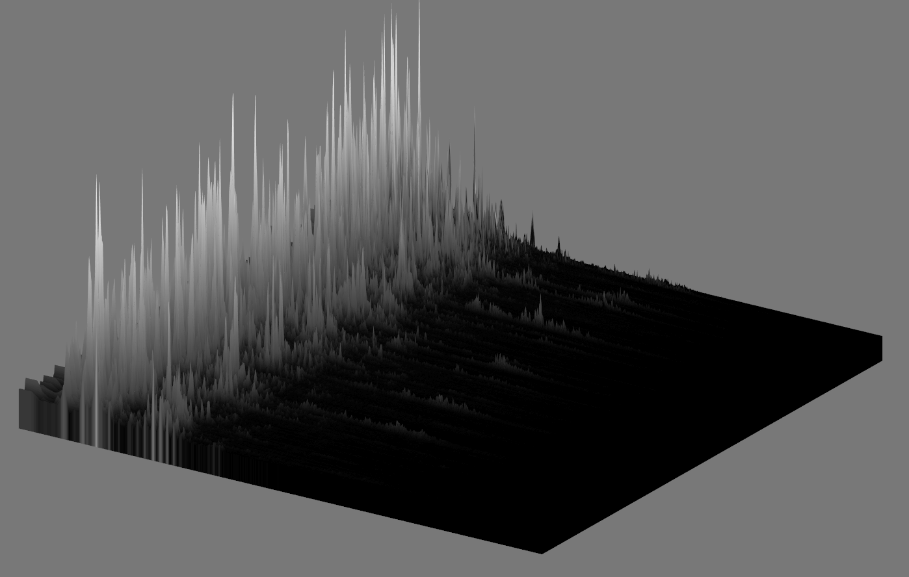

Visualizing the FFT of an Audio Signal
The Fourier Transform is a mathematical tool for signal analysis - it sees many applications in audio and electronics. In essence, you take as input a vector representing some finite number of samples of the signal in the time domain, that is, as you would observe it happening in time, and produce as output a vector of values which indicate the intensity of the frequency components of this signal. If you were to run this transform on a pure sinusoid, for example, f(t) = sin(2πt), you would observe one spike in this output vector, which would map to the frequency of that sinusoid. Real signals often have more frequency components, and as such you have more information to work with. One way of visualizing this is with a 2D plot called a spectrogram - this consists of a series of these output vectors, which are computed from samples in a sliding window, lined up along a second axis representing time.
This type of a plot is generally presented as grayscale, where black and white are used to represent low and high areas of intensity, or some gradient between other colors, mapped to this 0-1 range. My first idea, and the reason to dig into this project, was to visualize this 2D spectrogram plot by treating it as a heightmap. This is a very simple bit of logic, where again this 0-1 range in the texture is mapped to some desired range of minimum to maximum vertex displacement.
In my undergrad, I took a number of Electrical Engineering courses where this material came up - Linear Signals and Systems as well as Digital Signals and Systems - in my capstone project, we used this logic as a method of visualizing signal on the four channels of an audio mixer. This was actually a very interesting project, and introduced me to a lot of signal processing concepts in the context of audio (dynamic range compression, windowing functions, some simple implementations of audio effects such as reverb).
Tools
This project used my traveling codebase, which I have been calling not-quite-an-engine. Specifically I am using SDL for windowing and input handling, as well as audio playback, OpenGL for hardware accelerated rendering, and FFTW for fast computation of the Fourier Transform. A few improvements I could make would be writing my own WAV loader and converting from FFTW to FFTS because from what I understand there are licensing issues around FFTW (as such I won't be including this in not-quite-an-engine going forward).
Methods
There is room for improvement - initially I though that holding linear data in a texture and translating to logarithmic in the shader would be viable, but I am finding issues in the use of uniformly spaced geometry for the surface that is being displaced. There are a number of ways to improve here, but I have a minimal working example. The data is passed into a compute shader using an SSBO, and two textures are used to synchronize the data as it moves down the axis representing time, very similar to the ping-ponging scheme used in several of my recent projects. The image moves one texel along each time the compute shader is invoked.